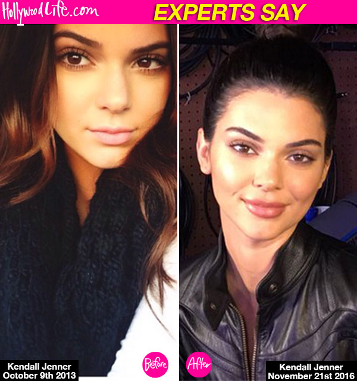

Dankest World News

Donald Trump wins
presidential election,
plunging US into
uncertain future
Donald Trump shattered expectations on Tuesday with an election night victory that revealed deep anti-establishment anger among American voters and set the world on a journey into the political unknown.
The Republican nominee has achieved one of the most improbable political victories in modern US history, despite a series of controversies that would easily have destroyed other candidacies, extreme policies that have drawn criticism from both sides of the aisle, a record of racist and sexist behaviour, and a lack of conventional political experience.
After surprise early victories in Florida, North Carolina and Ohio, it fell to the rust belt states of the industrial midwest to determine the result of his stunning upset.
Wisconsin and Michigan, two states hit hard by a decline in manufacturing jobs and lost by Hillary Clinton to Bernie Sanders in the Democratic primary, were led by Trump as the race headed for an early morning cliffhanger.
At 2.30am, the Associated Press projected Trump had won Wisconsin and called the overall race for Trump, who passed the 270 electoral college votes he needed to secure the presidency.

Kendall Jenner, 21, is known for her natural beauty. So needless to say, fans lost it when they noticed the supermodel debuting a much plumper pout during a Facebook live session with her sister on Nov. 21. Kylie Jenner, 19, took to social media to deny the rumors, claiming she enhanced her sibling’s lips with the help of liner. However, HollywoodLife.com EXCLUSIVELY spoke to plastic & reconstructive surgeon, John Zannis, who told us his opinion on her seemingly transformed look! “This recent photo looks very much like lip injections were used. The raised vermillion border is a tip-off, especially since it wasn’t present in earlier photos.”
Kendall Got Lip Injections, Not Makeup!
Kendall Jenner, 21, is known for her natural beauty. So needless to say, fans lost it when they noticed the supermodel debuting a much plumper pout during a Facebook live session with her sister on Nov. 21. Kylie Jenner, 19, took to social media to deny the rumors, claiming she enhanced her sibling’s lips with the help of liner. However, HollywoodLife.com EXCLUSIVELY spoke to plastic & reconstructive surgeon, John Zannis, who told us his opinion on her seemingly transformed look! “This recent photo looks very much like lip injections were used. The raised vermillion border is a tip-off, especially since it wasn’t present in earlier photos.”